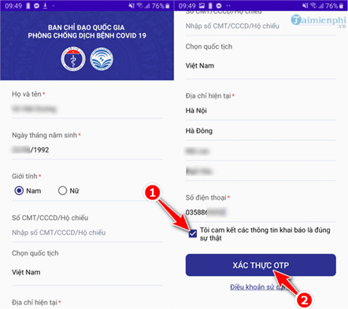
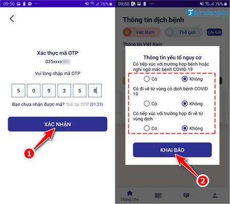
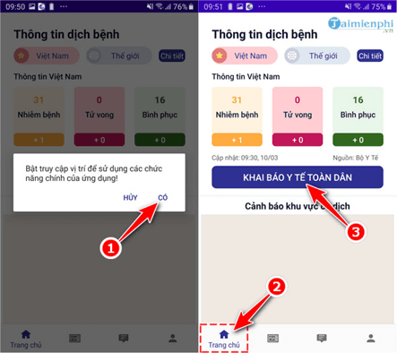
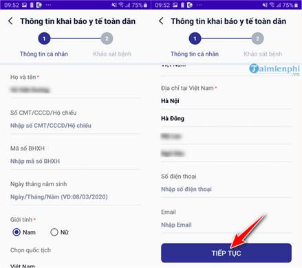
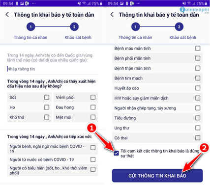

Hướng dẫn cách khai báo y tế trên ứng dụng NCOVI
Nhằm tăng cường các biện pháp phòng, chống dịch bệnh Covid -19, Bộ Y tế khuyến nghị toàn dân dùng app khai báo y tế phòng chống COVID-19.
Bằng cách khai báo y tế trên ứng dụng NCOVI, mỗi chúng ta đã đóng góp phần công sức vào công cuộc phòng và chống đại dịch cúm Corona, giúp các cơ quan nhà nước, Bộ Y Tế có thể thống kê, kiểm soát tình hình và thực hiện các biện pháp cách ly chính xác và nhanh chóng, trách lây lan.
Trước tình hình đại dịch cúm Corona hay Covid-19 đang lây lan ngày một nhanh hơn, chiều 9/3, Bộ Y Tế kết hợp Bộ Thông tin và Truyền thông đã tiến hành mở dịch vụ khai báo y tế trên ứng dụng NCOVI(hay nCoV) và Vietnam Health Declaration hỗ trợ khai báo y tế, nâng cao công tác phòng chống dịch.
Hiện nay, ứng dụng này đã có trên cả hai hệ điều hành Android và iOS, người dùng có thể tải trực tiếp FREE từ điện thoại và thực hiện theo hướng dẫn sau đây.
Qua app NCOVI:
- Link tải dành cho Android: https://play.google.com/store/apps/details?id=com.vnptit.innovation.ncovi
- Link tải dành chi IOS: https://apps.apple.com/vn/app/ncovi-mobifone/id1501969272
HƯỚNG DẪN KHAI BÁO Y TẾ, SỨC KHỎE TOÀN DÂN TRÊN ỨNG DỤNG NCOVI
Bước 1: Mở ứng dụng NCOVI vừa tải và cài đặt trên thiết bị.
Bước 2: Trong lần đầu đăng nhập, ứng dụng sẽ yêu cầu người dùng nhập đầy đủ và chính xác các Thông tin cá nhân, đặc biệt là các mục được đánh dấu * , gồm:
+ Họ và tên
+ Ngày tháng năm sinh
+ Giới tính
+ Địa chỉ hiện tại
+ Số điện thoại
Sau khi nhập xong các thông tin, bạn hãy đánh dấu vào mục "Tôi cam kết các thông tin khai báo là đúng sự thật" rồi nhấn vào nút Xác thực OPT .

Bước 3: Một mã OPT sẽ được gửi qua tin nhắn đến điện thoại trong 2 phút. Bạn nhập mã xác thực vào ô thông tin và nhấn Xác nhận .
Trên màn hình khai báo y tế trên ứng dụng NCOVI shiện cửa sổ khai báo Thông tin yếu tố nguy cơ. Sau khi trả lời Có hoặc Không , bạn nhấn nút Khai báo để hoàn thành.

Bước 4: Trong lần truy cập đầu tiên trên ứng dụng khai báo y tế NCOVI, bạn sẽ nhận được yêu cầu người dùng cấp quyền sử dụng tính năng định vị, chọn Có trong bảng thông báo để đồng ý.
Tại cửa sổ làm việc chính của ứng dụng, bạn chọn thẻ Trang chủ bên dưới màn hình, sau đó bạn nhấn vào nút Khai báo y tế toàn dân.

Bước 5: Trong màn hình Thông tin khai báo y tế toàn dân , trước tiên bạn cần nhập các thông tin cá nhân của mình vào tờ khai báo y tế trên ứng dụng NCOVI. Các mục được đánh dấu * là bắt buộc.
Sau khi điền xong thông tin cá nhân, bạn chọn Tiếp tục .

Bước 6: Hệ thống chuyển bạn qua màn hình Khảo sát bệnh . Tại đây bạn cũng trả lời các câu hỏi trên khai báo y tế trên ứng dụng NCOVI. Sau đó đánh dấu vào ô "Tôi cam kết các thông tin khai báo là đúng sự thật". Nhấn Gửi thông tin khai báo để hoàn thành.

Qua 6 bước thực hiện, Pico đã hướng dẫn xong cho bạn các bước cần thiết để tải và khai báo y tế trên ứng dụng NCOVI nhanh chóng, chính xác nhất. Mong rằng mỗi chúng ta sau khi tham khảo bài viết sẽ chung tay góp sức phòng chống dịch cúm Corona bằng cách thực hiện khai báo y tế toàn dân chi tiết và trung thực nhất.
CÙNG PICO CHUNG TAY BẢO VỆ SỨC KHỎE CỘNG ĐỒNG
ĐẨY LÙI COVID-19.